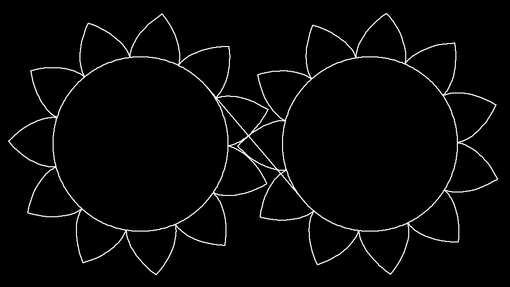

If one unreavels a thread from a wheel, then the
endpoint of the thread moves on the involute of a circle.
Modify Image:
Involutes of a parametrized curve c(t) are computed
as follows: Pick a starting value t0 and for t > t0
draw the backwards tangent of length (t-t0):
inv(t) = c(t) - (t-t0)*c'(t).
The shape of the teeth of gear wheels for heavy
machinery is given by circle involutes. The main
advantage of such gear wheels is that the
ratio of the
angular velocities of the driving and the driven wheel
is constant. This avoids destructive vibrations.
The midpoints of the osculating circles of an involute trace out the
original curve (here a circle).
The trace of these midpoints is called evolute. Therefore:
The evolute of the involute is the original curve.
The difference of the radii of the osculating circles
at inv(t1) and inv(t2) is the arc length of the
original curve c between c(t1) and c(t2). The difference of their
midpoints is less, namely
only |c(t1) - c(t2)|. Therefore the smaller circle is inside the larger one.

Gear with involute teeth. During rotation each flank moves to a parallel involute.
No matter where the two touching flanks have their contact point, the distance to
parallel involutes is the same. Therefore: If one wheel rotates with constant
speed, then so does the other - no vibrations are excited.